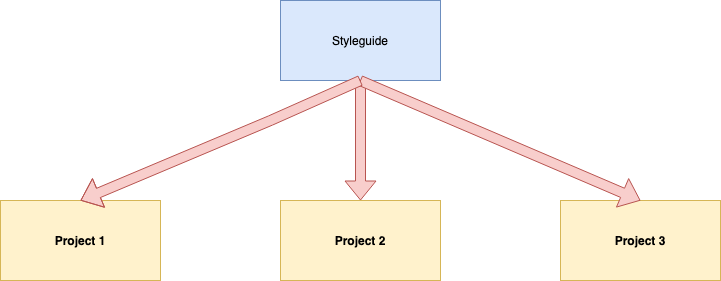

A styleguide clearly demonstrates how all interface elements and components are to be visually represented. It’s essentially a master reference for the user interface (UI).
A lot of designers and creatives overlook the need for a brand styleguide (also called a brand bible by some) — something that gives a clear set of rules for how our projects should look.
All components are designed with extensibility and adaptivity in mind, the sicpa colors/design way
It would be infinitely easier if we could simply hand over a styleguide that contains everything they need to know: colors, logo sizes and placement, fonts used, components ... etc.
